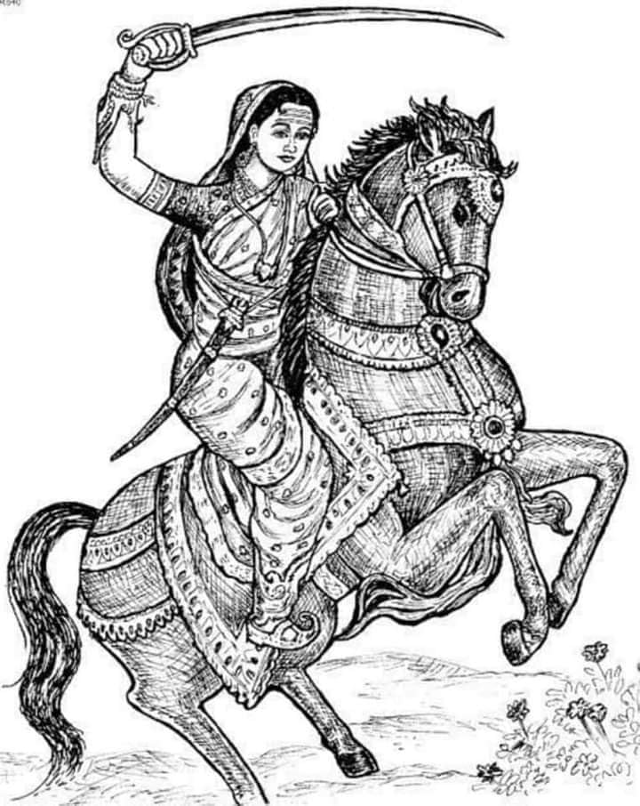

Rani Lakshmibai |

Rani Lakshmibai ji, popularly known as the Queen of Jhansi, was one of the most
fearless leaders of India’s First War of Independence in 1857. Born on November 19, 1828,
in Varanasi, she grew up learning horse riding, sword fighting, and archery.
When the British tried to annex Jhansi under the Doctrine of Lapse, she stood up
against them with extraordinary courage.
She led her army bravely and became a
symbol of women’s valor in Indian history. Her sacrifice and bravery are remembered
as the spirit of resistance against British rule..
| Born | November 19, 1828 (Varanasi, Uttar Pradesh) |
|---|---|
| Known For | Leading the revolt of 1857, bravery in battle. |
| Famous Slogan | Khoob ladi mardani, woh toh Jhansi wali Rani thi. |
| Martyrdom | June 18, 1858 (Battle of Gwalior) |